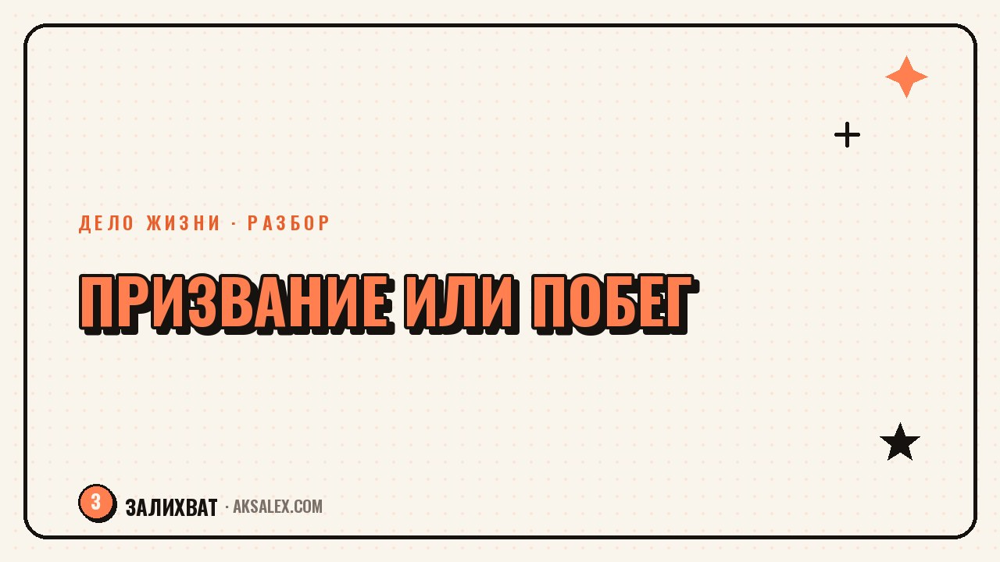

Твоё дело - призвание или побег от реальности?

Вопрос «а вдруг я убеждаю себя, что нашла призвание, а на самом деле лишь бегу от нелюбимой работы или тяжёлых отношений» рано или поздно приходит к каждому, кто начинает новое дело. Иногда за ним стоит реальная тревога, иногда - обычная усталость, которую легко спутать с сомнением в выборе. Разбираем, как отличить одно от другого без самобичевания.
Почему вопрос «призвание или побег» вообще возникает
Этот вопрос чаще всего всплывает не в начале пути, а в момент, когда дело стало единственным источником радости в жизни, где всё остальное - работа, отношения, рутина - уже давно выгорело. Тревога звучит так: а вдруг я не люблю это дело, а только хочу куда-то спрятаться.
Сама тревога не означает, что ты ошиблась. Она значит, что ты наблюдательна и хочешь действовать из ясности, а не из слепого бегства. Это уже хороший знак - большинство людей себе такие вопросы даже не задают.
Когда вопрос звучит особенно громко
- После увольнения или тяжёлого разговора, который подтолкнул к новому делу
- Когда близкие сомневаются в выборе и ты начинаешь сомневаться вслед за ними
- В момент, когда дело не приносит денег и хочется объяснить себе, зачем всё это
- После перерыва, когда дело остаётся, а остальная жизнь так и не наладилась
Признаки, что дело скорее побег от реальности
Побег обычно узнаётся не по самому делу, а по тому, как ты о нём говоришь и что чувствуешь, когда оно не идёт. Если главная функция дела - не думать о проблеме в другой сфере жизни, оно держится на избегании, а не на интересе.
- Сложно назвать, что конкретно нравится в процессе - только то, от чего это отвлекает
- Любая пауза в деле возвращает тревогу, которую хотелось не замечать
- Разговор о деле быстро превращается в разговор о том, что плохо в остальной жизни
- Нет интереса к развитию в самом деле - важно только, чтобы оно занимало время
Признаки настоящего призвания
Призвание устроено иначе: интерес к процессу сохраняется даже тогда, когда остальная жизнь в порядке и прятаться не от чего. Ты можешь описать, что конкретно цепляет - не абстрактное «мне нравится», а точные моменты внутри работы.
Ещё один признак - любопытство к деталям, которые никто не оценит и не увидит. Если тебе интересно разобраться в теме глубже даже без зрителей и похвалы, это говорит о подлинном интересе, а не о роли, которую ты для кого-то играешь.
Побег ищет, куда спрятаться. Призвание ищет, куда расти - даже когда прятаться уже не от чего.
Как проверить себя: таблица и вопросы для честного разговора
Ни один признак по отдельности не даёт точного ответа - важно смотреть на сочетание ощущений. Вот как обычно выглядит разница на практике.
| Признак | Похоже на призвание | Похоже на побег |
|---|---|---|
| Чувство после работы | Устала, но довольна результатом | Пусто, как будто спряталась ненадолго |
| Когда дело не идёт | Интересно разобраться, что пошло не так | Хочется всё бросить и никогда не возвращаться |
| Выходные без дела | Тянет вернуться из интереса, а не из тревоги | Дело - единственное место, куда можно деться |
| Разговор с близкими о деле | Легко объяснить, что конкретно нравится | Сложно объяснить без фразы «мне нужно было куда-то уйти» |
- Что конкретно тебе нравится в процессе, отдельно от результата
- Останется ли интерес к делу, если завтра решится проблема, от которой ты бежишь
- Чем ты занималась бы в этой сфере, даже если бы никто не видел результата
Можно ли превратить побег в призвание
Хорошая новость: даже если дело началось как побег, это не значит, что оно обречено. Многие устойчивые дела жизни стартовали именно в трудный период - человек хватался за что угодно, а потом обнаружил в этом настоящий интерес.
- Реши отдельно проблему, от которой бежишь, - хотя бы маленький шаг, не связанный с делом
- Проверь через месяц-два, остался ли интерес к делу, когда острота тревоги снизилась
- Не вини себя за мотив старта - важно, куда дело движется сейчас, а не с чего началось
Частые вопросы
Как понять, что моё дело - призвание, а не способ убежать от проблем?
Посмотри, остаётся ли интерес к делу, когда проблема, от которой хотелось сбежать, временно отступает - например, в спокойный период. Если интерес сохраняется и ты можешь назвать конкретные моменты, которые нравятся в процессе, это ближе к призванию, чем к бегству.
Это плохо, если дело началось как побег от нелюбимой работы?
Нет, старт из трудного момента не обесценивает дело - важно, во что оно превращается со временем. Многие устойчивые дела жизни начинались именно как способ пережить сложный период, а потом переросли в настоящий интерес.
Как отличить усталость от дела от сомнения в правильности выбора?
Усталость проходит после отдыха и не меняет отношения к самому делу, а сомнение в выборе возвращается даже после паузы. Если после недели без дела тебя тянет обратно из интереса - это усталость, а не признак ошибки.
Стоит ли бросать дело, если оказалось, что оно было побегом?
Не обязательно - сначала попробуй разобраться с проблемой, от которой ты бежала, отдельно от дела, и посмотри, что останется. Иногда после этого дело раскрывается заново, и становится ясно, что интерес был настоящим, только спрятан за тревогой.
Что делать, если близкие говорят, что я прячусь в новом деле от настоящих проблем?
Выслушай их наблюдение, но проверяй его своими ощущениями, а не чужим мнением - у близких нет доступа к тому, что ты чувствуешь внутри процесса. Задай себе честные вопросы о деле, прежде чем решать, прав ли был тот, кто это сказал.
Раз тема оказалась полезной, вот что почитать следующим. Как вести блог о своей профессии и не скатиться в занудные лекции для коллег.
Читать статью →а не вручную